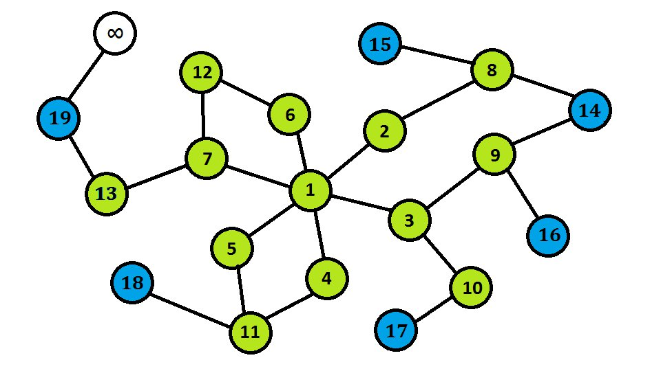
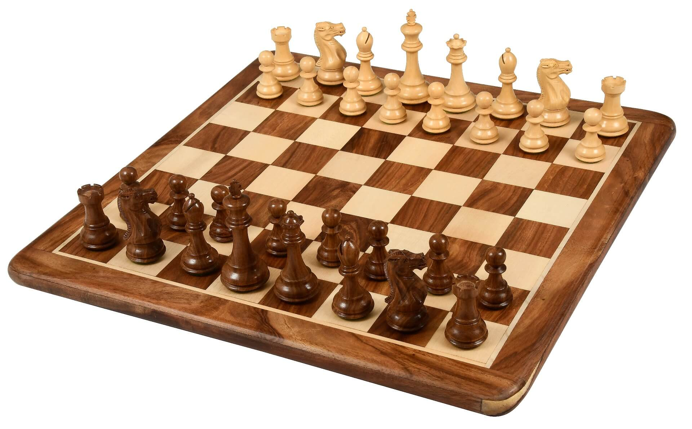
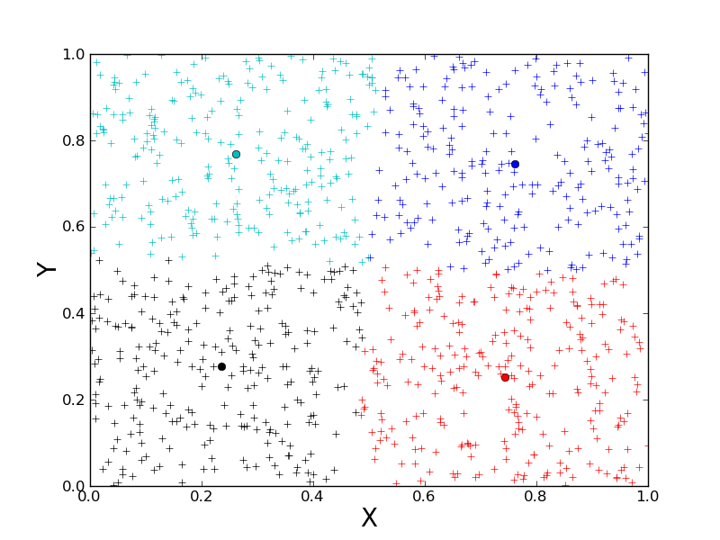
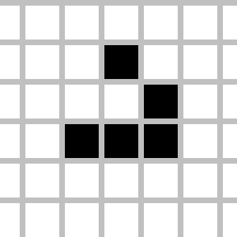

Mes Projets de cours

SAÉ 2.01 + 2.02 application et exploration algorithmique
Logiciel de recherche du pus court chemin

Projet Agile : Jeu java sur terminal
Dévellopement agile d'un jeu d'échecs
Réussite

SAE 3.02 : Application de classification
Algorithme des plus proches voisin
Classiflex
SAE 4.01.1 : Réseau social Web
Création en servlet/jsp d'un réseau social web
ByteBuddies
Mes Projets personnels

Jeu de la vie de Conway || Lenya
Application Java avec Machine Learning
Primordial's Soup